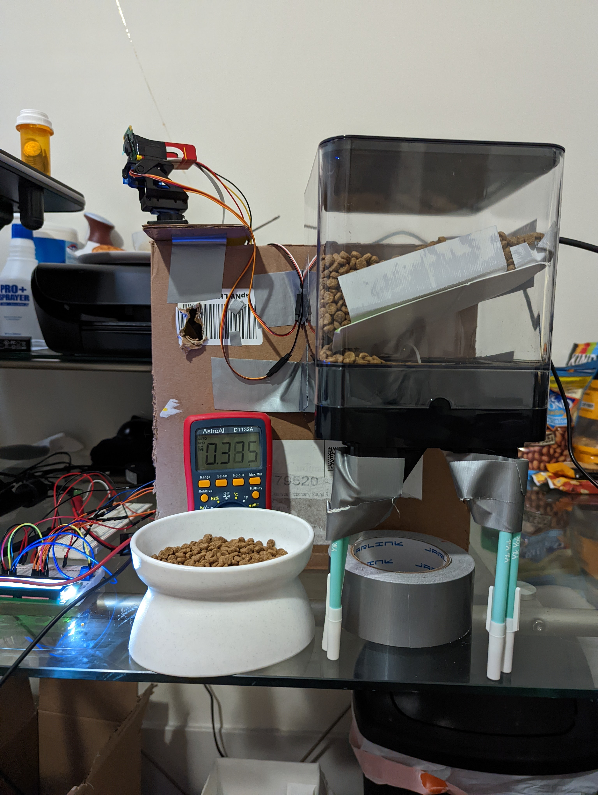

The Automated Cat Feeder (Plus)
A group of students and I are planning to make an automated cat feeder using a Raspberry Pi

Materials
- Raspberry Pi 4 Model B
- Hybrid Stepper Motor
- Stepper Motor Pi Bonnet
- LCD Display
- PWM Motor Pi Bonnet
- Dual Servo Pan-Tilt Kit
- TTL Laser Diode
- Raspberry Pi Camera Module
- Power Supply
- Cereal dispenser
- GPIO Riser Pack
So far, we've created a few final product sketches and made a prototype to test functionality and see if our original ideas needed any tweaking. At this stage we figured out the power delivery circuit, which was relatively simple, and decided to attach the Pi camera to the pan-tilt kit with the laser rather than have the camera be in a static position.
